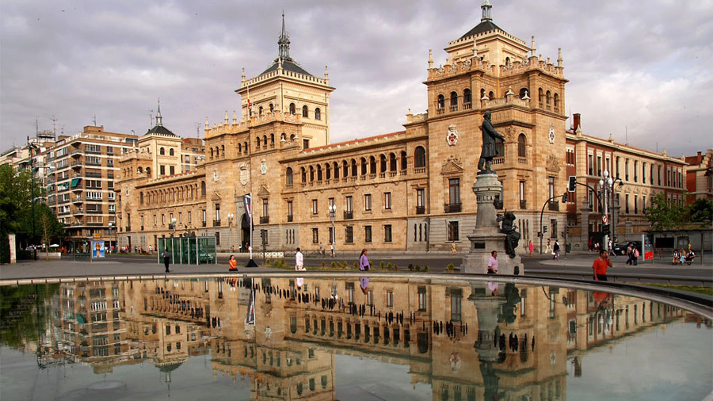
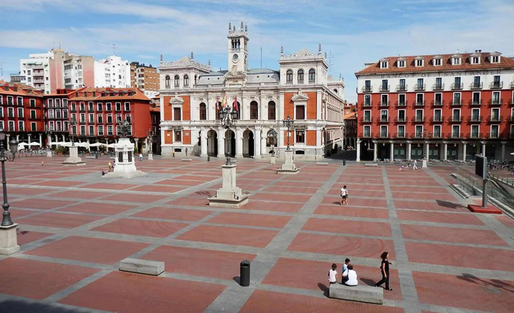

Gonzalo Agundez Saez
Valladolid is a historic city located in northwestern Spain and is the capital of Castilla and Leon. It holds great historical significance because it was once the capital of the Spanish Empire. In fact, it was the site of the wedding of the Catholic Monarchs, Ferdinand II of Aragon and Isabella I of Castile.


Real Valladolid Club de Futbol is a historic Spanish football club based in the city of Valladolid. Founded in 1928, the team is often referred to by its nickname, "Pucela," and its fans are known as "Pucelanos." The club plays its home matches at the Estadio Jose Zorrilla, which can hold over 27000 spectators.